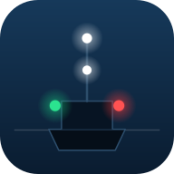
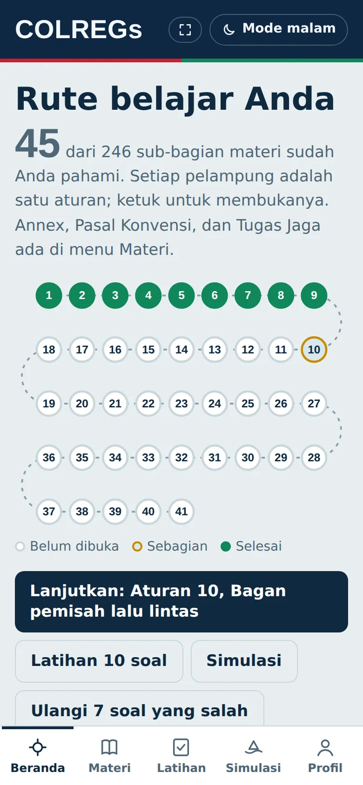
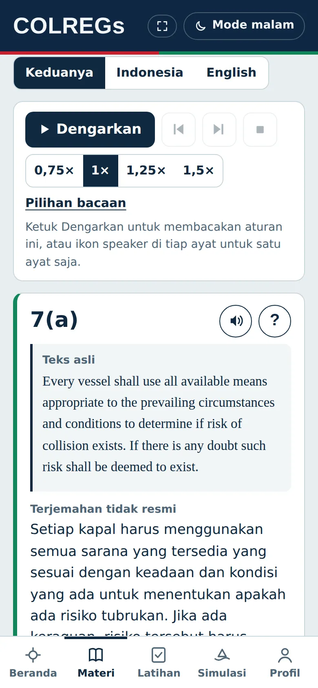
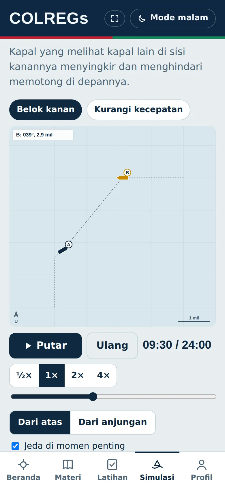
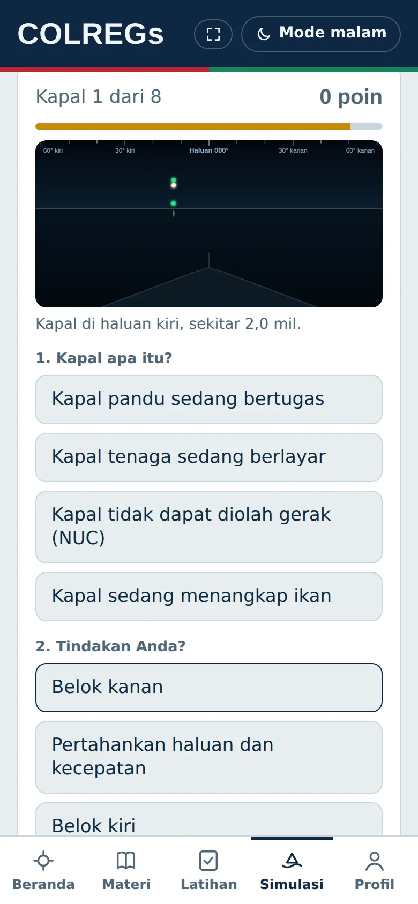

COLREGs: Jaga Anjungan
Aplikasi belajar COLREGs untuk taruna dan perwira. Gratis, bahasa Indonesia, dan bisa dipakai tanpa internet.
Anda membukanya dari dalam aplikasi lain (misalnya Instagram atau Facebook). Dari sini aplikasi tidak bisa dipasang. Ketuk menu ⋯ lalu pilih "Buka di browser", atau salin alamat halaman ini ke Chrome atau Safari.
Pasang aplikasi
- Buka halaman ini di Chrome.
- Ketuk menu ⋮ di kanan atas.
- Pilih Instal aplikasi atau Tambahkan ke layar utama.
- Ikon Jaga Anjungan muncul di layar utama. Buka dari sana.
Untuk yang lebih suka memasang file aplikasi. Android akan meminta izin memasang dari sumber ini.
Unduh APKUntuk hasil terbaik, buka halaman ini di Safari.
- Buka halaman ini di Safari.
- Ketuk tombol Bagikan (kotak dengan panah ke atas).
- Gulir lalu pilih Tambahkan ke Layar Utama.
- Ketuk Tambah. Ikon Jaga Anjungan muncul di layar utama.
- Chrome atau Edge: klik ikon pasang di ujung kanan bilah alamat, atau buka menu lalu pilih Instal / Pasang aplikasi.
- Safari di Mac: buka menu File, lalu pilih Tambahkan ke Dock.
Tampilan aplikasi




Isinya
Pertanyaan umum
Apakah gratis?
Ya. Tidak ada iklan dan tidak perlu membuat akun.
Apakah butuh internet?
Hanya saat memasang dan saat ada pembaruan. Setelah itu materi, latihan, dan simulasi berjalan tanpa internet. Fitur AI (Tanya AI dan ujian lisan) dibuka di claude.ai dan membutuhkan internet.
Di mana progres saya disimpan?
Hanya di perangkat Anda. Untuk memindahkan ke perangkat lain atau membuat cadangan, gunakan Ekspor dan Impor di menu Profil.
Bagaimana dengan pembaruan?
Aplikasi memeriksa pembaruan sendiri. Bila ada versi baru, muncul pemberitahuan dan cukup ketuk Muat ulang.
Apakah ini terbitan resmi?
Bukan. Ini aplikasi belajar mandiri. Terjemahan bahasa Indonesia tidak resmi; untuk keperluan resmi, rujuk teks COLREGs yang diterbitkan IMO.